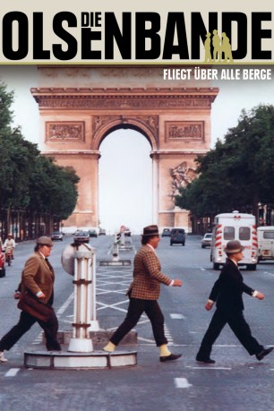

#5411 Olsenbande 13 - Die Olsenbande fliegt über alle Berge
 
 IMDB-Wertung: 6.9 / 10
IMDB-Wertung: 6.9 / 10  Metascore: 0
Metascore: 0 
Nachdem Benny und Kjeld Egon am Ende des letzten Filmes das Leben gerettet haben setzen sie ihre Versuche fort, an den Koffer von Bang-Johansen zu kommen, was schließlich dazu führt, dass Egon als Frau verkleidet im Bus durch Kopenhagen fährt. Schließlich folgen sie ihm in einem Carlsberg-LKW nach Paris, wo sie ihm den Koffer dann abnehmen können. Doch in Kopenhagen wartet bereits die Polizei auf Egon, die ihn dann auch gleich in Gewahrsam nimmt.
Jahr: 1981
Dauer: 95 Minuten
FSK: 12
Land: Dänemark Studio: Icestorm EntertainmentTonspuren:
Untertitel:
Auflösung: 1080p (1792x1080) Größe: 5939 MB
Genre: Komödie, Krimi
Regisseur: Erik Balling
Drehbuch: Martin Gies
Soundtrack:
Darsteller:
 Morten Grunwald als Benny Frandsen
Morten Grunwald als Benny Frandsen- Ove Sprogøe als Egon Olsen
- Poul Bundgaard als Kjeld Jensen
- Kirsten Walther als Yvonne Jensen
- Axel Strøbye als Kriminalassistent Jensen
- Ole Ernst als Politiassistent Holm
- Bjørn Watt-Boolsen als Bang-Johansen
- Holger Juul Hansen als Hallandsen
- Ove Verner Hansen als Bøffen
- Poul Reichhardt als Havnevagt
- Dick Kaysø als Kranfører
- Claus Ryskjær als Bodyguardleder
- Søren Steen als Bodyguard
- Kai Løvring als Rengøringsdirektør
- Holger Perfort als Lagerforvalter hos Carlsberg
- Bertel Lauring als Lagerarbejder hos Carlsberg
- Bendt Rothe als Fransk overtjener
- Paul Hagen als Fransk chefkok
- Edward Fleming als Livvagt
- Arlette Didier als Suzanne
- Charlotte Auffrey als (uncredited
- Tage Axelson als Renault-lastbilchauffør , uncredited
- Flemming Dyjak als Chauffør fra belysningsvæsenet , uncredited
- Allan Frank als Mand , uncredited
- Gyda Hansen als Rengøringskone , uncredited
- Kirsten Hansen-Møller als Dame med barn i bussen , uncredited
- Søren Hauch-Fausbøll als KBG-mand på 4.hold , uncredited
- Jeanne Herviale als (uncredited
- Lone Kellerman als Fransk bordelmutter , uncredited
- Alvin Linnemann als Ansat på Renault-værksted , uncredited
- Martin Miehe-Renard als Tjener på Maxime's , uncredited
- Claus Nissen als Bodyguard , uncredited
- Jan Middelbo Outzen als Mand , uncredited
- Folmer Rubæk als Mand , uncredited
- Elsa Booker Svendsen als Rengøringsdame , uncredited
- Poul Thomsen als Vagtmand i belysningsvæsnets kontroltårn , uncredited
- Albert Verner als Mand , uncredited
- Arne Westermann als Afholdscafé-tjener , uncredited
Datei: X:\7+mehr(A-Z)\Olsenbande\Olsenbande 13 - Die Olsenbande fliegt über alle Berge (1981, FSK12, 1792x1080).mkv seit 30.01.2017
Festplatte: HD Collection-7+mehr(A-Z)+Person
 Es gibt insgesamt 17 Filme in der Gruppe '7+mehr(A-Z)\Olsenbande'
Es gibt insgesamt 17 Filme in der Gruppe '7+mehr(A-Z)\Olsenbande'